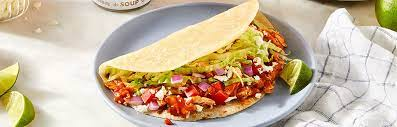

Easy 20 Minute Chicken Tacos
The History of Tacos
The taco is a food originating from Mexico, long before the Spanish arived. These ancient Mexicans used soft corn tortillas with fillings like fish and cooked organs. It wasn't until 1905 that the taco was brough to the United States. Mexican migrants came to the states to work and brought their delicous foods with them. By 1920, the tacos brought from Mexico were slowly changing into the tacos we know today. The organs were changed to more palatable ground beef and chicken. Cheese, lettuce, and tomatoe became regular toppings. In a nutshell, the taco was slowly becoming a Mexican-American fusion.

This Recipe is a delicous, easy, and quick way to make and enjoy chicken tacos. Even if you have little expierence cooking, it should still not give you too much trouble.
Ingredients
- 1 pound chicken thighs, boneless skinless or chicken breasts
- 2 cloves garlic minced
- 1 tablespoon of lime juice (optional)
- 2 tablespoons of olive oil
- 1 tablespoon of chili powder
- 1/2 teaspoon of paprika (optional)
- 1/2 teaspoon of garlic powder or onion powder
- 1/2 teaspoon of salt
- 1/4 teaspoon black pepper
- 8 small corn or flour tortillas
Instructions
- Add the chicken, garlic, olive oil, lime, and spices, to a large bowl or zip-seal bag and stir or shake to combine.
- Heat a large pan to medium-high heat. Cook chicken 6-7 minutes per side or until it is no longer pink and the internal temperature of 165 degrees F. Remove from heat and cool for at least 5 minutes. Slice or chop into small cubes.
- Assemble tacos by placing about 1/4 cup of chicken into each tortilla.
- Add any other toppings onto taco: Cheese, lettuce, tomatoe, onion, salsa, guacomole, hot sauce, etc. (Optional)
Layla. (2019, January 12). Easy 20 minute chicken tacos. Gimme Delicious. https://gimmedelicious.com/chicken-tacos/ Twisted Taco. (2019, May 22). Atlanta Tex Mex Restraunt. https://www.twistedtaco.com/the-history-of-the-taco#:~:text=It%20originated%20from%20Mexican%20silver,working%20class%2C%20which%20included%20miners.